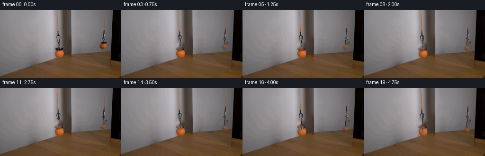
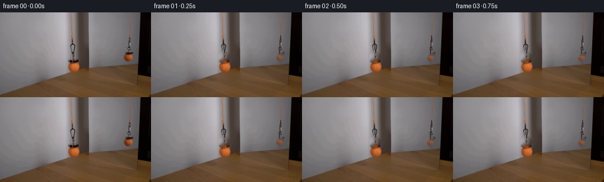

CODING AGENTS AS PIXEL WORLD MODELS
traex/DeepSeek-V4.1-Flash · 0116
点击播放 · 原生 RGB 像素
逐轮保存的候选
回放视频、检查图与代码变化。
每份候选均可单独播放。实际图片检查记录在下方工具轨迹中。
候选 01播放与检查图
点击播放 · 原生 RGB 像素


展开代码变化
--- 上一保存版本
+++ 本次保存版本
@@ -0,0 +1,108 @@
+from pathlib import Path
+
+import cv2
+import numpy as np
+from PIL import Image
+
+import artifact_io
+
+
+ROOT = Path(__file__).resolve().parent
+FRAME_COUNT = 20
+
+
+def smoothstep(value):
+ value = np.clip(value, 0.0, 1.0)
+ return value * value * (3.0 - 2.0 * value)
+
+
+def ellipse_alpha(shape, center, radii, feather=1.0):
+ height, width = shape
+ yy, xx = np.mgrid[:height, :width]
+ cx, cy = center
+ rx, ry = radii
+ radius = np.sqrt(((xx - cx) / rx) ** 2 + ((yy - cy) / ry) ** 2)
+ return smoothstep((1.0 - radius) / feather)
+
+
+def make_background(source):
+ mask = np.zeros(source.shape[:2], dtype=np.uint8)
+ cv2.ellipse(mask, (124, 75), (10, 10), 0, 0, 360, 255, -1)
+ cv2.ellipse(mask, (217, 76), (10, 10), 0, 0, 360, 255, -1)
+ return cv2.inpaint(source, mask, 4, cv2.INPAINT_TELEA)
+
+
+def extract_ball(source, center, radii):
+ cx, cy = center
+ radius_x, radius_y = radii
+ x0 = int(np.floor(cx - radius_x))
+ x1 = int(np.ceil(cx + radius_x)) + 1
+ y0 = int(np.floor(cy - radius_y))
+ y1 = int(np.ceil(cy + radius_y)) + 1
+ patch = source[y0:y1, x0:x1].astype(np.float32)
+ alpha = ellipse_alpha(patch.shape[:2], (cx - x0, cy - y0), (radius_x, radius_y), 1.15)
+ return patch, alpha[..., None], x0, y0
+
+
+def paste_ball(canvas, patch, alpha, x0, y0, dy):
+ height, width = alpha.shape[:2]
+ target_y = y0 + int(round(dy))
+ target_x = x0
+ region = canvas[target_y:target_y + height, target_x:target_x + width]
+ region[:] = patch * alpha + region * (1.0 - alpha)
+
+
+def draw_suspension(canvas, anchor, ball_center, radius_y, dy, reflection):
+ ax, ay = anchor
+ bx = ball_center[0]
+ by = ball_center[1] + dy - radius_y + 1.2
+ steps = max(2, int(abs(by - ay)) * 3)
+ ys = np.linspace(ay, by, steps)
+ xs = np.linspace(ax, bx, steps)
+
+ if reflection:
+ core = np.array([48, 35, 31], dtype=np.float32)
+ edge = np.array([83, 66, 58], dtype=np.float32)
+ else:
+ core = np.array([39, 35, 34], dtype=np.float32)
+ edge = np.array([77, 70, 67], dtype=np.float32)
+
+ for x, y in zip(xs, ys):
+ ix = int(round(x))
+ iy = int(round(y))
+ if not (0 <= ix < canvas.shape[1] and 0 <= iy < canvas.shape[0]):
+ continue
+ canvas[iy, ix] = canvas[iy, ix] * 0.22 + core * 0.78
+ if ix + 1 < canvas.shape[1]:
+ canvas[iy, ix + 1] = canvas[iy, ix + 1] * 0.72 + edge * 0.28
+
+
+def generate():
+ source = np.array(Image.open(ROOT / "first_frame.png").convert("RGB"), dtype=np.uint8)
+ background = make_background(source).astype(np.float32)
+
+ actual_patch, actual_alpha, actual_x, actual_y = extract_ball(source, (124, 75), (8.7, 8.7))
+ mirror_patch, mirror_alpha, mirror_x, mirror_y = extract_ball(source, (217, 76), (8.3, 8.3))
+
+ frames = np.empty((FRAME_COUNT, 144, 256, 3), dtype=np.uint8)
+ frames[0] = source
+
+ for index in range(1, FRAME_COUNT):
+ progress = index / (FRAME_COUNT - 1)
+ eased = 0.55 * progress + 0.45 * progress * progress
+ actual_dy = 13.0 * eased
+ mirror_dy = 13.0 * eased
+
+ canvas = background.copy()
+ draw_suspension(canvas, (122.0, 47.0), (124.0, 75.0), 8.7, actual_dy, False)
+ draw_suspension(canvas, (219.0, 39.0), (217.0, 76.0), 8.3, mirror_dy, True)
+ paste_ball(canvas, actual_patch, actual_alpha, actual_x, actual_y, actual_dy)
+ paste_ball(canvas, mirror_patch, mirror_alpha, mirror_x, mirror_y, mirror_dy)
+
+ frames[index] = np.clip(np.rint(canvas), 0, 255).astype(np.uint8)
+
+ artifact_io.save(frames, ROOT)
+
+
+if __name__ == "__main__":
+ generate()
候选 02播放与检查图
点击播放 · 原生 RGB 像素

展开代码变化
--- 上一保存版本
+++ 本次保存版本
@@ -46,10 +46,20 @@
def paste_ball(canvas, patch, alpha, x0, y0, dy):
height, width = alpha.shape[:2]
- target_y = y0 + int(round(dy))
+ whole_shift = int(np.floor(dy))
+ fraction = dy - whole_shift
+ matrix = np.array([[1.0, 0.0, 0.0], [0.0, 1.0, fraction]], dtype=np.float32)
+ shifted_patch = cv2.warpAffine(
+ patch, matrix, (width, height), flags=cv2.INTER_LINEAR, borderMode=cv2.BORDER_REFLECT_101
+ )
+ shifted_alpha = cv2.warpAffine(
+ alpha, matrix, (width, height), flags=cv2.INTER_LINEAR, borderMode=cv2.BORDER_REFLECT_101
+ )
+ shifted_alpha = shifted_alpha[..., None]
+ target_y = y0 + whole_shift
target_x = x0
region = canvas[target_y:target_y + height, target_x:target_x + width]
- region[:] = patch * alpha + region * (1.0 - alpha)
+ region[:] = shifted_patch * shifted_alpha + region * (1.0 - shifted_alpha)
def draw_suspension(canvas, anchor, ball_center, radius_y, dy, reflection):
候选 03播放与检查图
可观测工具轨迹
实际执行的命令与返回图片。
命令 1exit 0
/bin/bash -c "pwd && rg --files -g '"'!*.pyc'"' | sed -n '1,120p'"
命令 2exit 0
/bin/bash -c "sed -n '1,240p' prompt.txt"
命令 3exit 0
/bin/bash -c "sed -n '1,280p' GENERATION_RULES.md"
命令 4exit 127
/bin/bash -c "file first_frame.png && identify -verbose first_frame.png | sed -n '1,100p'"
命令 5exit 0
/bin/bash -c "sed -n '1,240p' artifact_io.py"
命令 6exit 0
/bin/bash -c "python - <<'PY'
from PIL import Image
import numpy as np
im=Image.open('first_frame.png')
print(im.mode, im.size)
a=np.array(im)
print(a.shape, a.dtype, a.min(), a.max(), a.mean(axis=(0,1)))
print('corners', a[0,0], a[0,-1], a[-1,0], a[-1,-1])
# quantized color counts
q=(a//16)*16
u,c=np.unique(q.reshape(-1,3),axis=0,return_counts=True)
for i in np.argsort(c)[-30:][::-1]: print(tuple(u[i]),c[i])
PY"命令 7exit 0
/bin/bash -c "python - <<'PY'
try:
import cv2; print('cv2', cv2.__version__)
except Exception as e: print('no cv2',e)
try:
import scipy; print('scipy',scipy.__version__)
except Exception as e: print('no scipy',e)
PY"命令 8exit 0
/bin/bash -c "python - <<'PY'
from PIL import Image
import numpy as np
im=np.array(Image.open('first_frame.png').convert('RGB'))
# ascii luminance 128x72, gamma-ish
chars=' .:-=+*#%@'
g=(im.astype(float)@np.array([.299,.587,.114]))/255
for y in range(0,144,2):
s=''
for x in range(0,256,2):
v=g[y:y+2,x:x+2].mean()
s+=chars[min(9,int(v*10))]
print(s)
PY"命令 9exit 0
/bin/bash -c "python - <<'PY'
from PIL import Image
import numpy as np
im=np.array(Image.open('first_frame.png').convert('RGB'))
chars=' .:-=+*#%@'
g=(im.astype(float)@np.array([.299,.587,.114]))/255
# rgb dominant classes and crop visual block symbols: tennis green/yellow, orange cord, black, light
for y in range(0,144,2):
s=''
for x in range(0,256,2):
b=im[y:y+2,x:x+2].mean((0,1))
r,gc,bl=b
if gc>r*1.12 and gc>bl*1.3 and gc>55: c='Y'
elif r>gc*1.25 and r>bl*1.4 and r>65: c='O'
elif max(b)<45: c='K'
elif max(b)>170 and max(b)-min(b)<35: c='W'
else: c=chars[min(9,int((r*.299+gc*.587+bl*.114)/255*10))]
s+=c
print(s)
PY"命令 10exit 0
/bin/bash -c "python - <<'PY'
from PIL import Image
import numpy as np, cv2
im=np.array(Image.open('first_frame.png').convert('RGB'))
# print colors in suspicious crop around tennis ball? likely yellow center-ish. HSV masks
hsv=cv2.cvtColor(im,cv2.COLOR_RGB2HSV)
for name,lo,hi in [('yellow',(15,60,50),(45,255,255)),('orange',(5,100,70),(25,255,255)),('green',(25,40,40),(90,255,255))]:
m=cv2.inRange(hsv,np.array(lo),np.array(hi))>0
ys,xs=np.where(m)
print(name, len(xs), (xs.min(),ys.min(),xs.max(),ys.max()) if len(xs) else None)
# components
n,lab,stats,cents=cv2.connectedComponentsWithStats(m.astype('uint8'),8)
for i in np.argsort(stats[1:,4])[-10:][::-1]+1:
print(' ',stats[i].tolist(),cents[i].round(1).tolist())
PY"命令 11exit 0
/bin/bash -c "python - <<'PY'
from PIL import Image
import numpy as np, cv2
im=np.array(Image.open('first_frame.png').convert('RGB'))
hsv=cv2.cvtColor(im,cv2.COLOR_RGB2HSV)
# list HSV sample grid every 16 px
for y in range(8,144,16):
print('y',y, [(x, tuple(im[y,x]), tuple(hsv[y,x])) for x in range(8,256,32)])
PY"命令 12exit 0
/bin/bash -c "python - <<'PY'
from PIL import Image
import numpy as np
im=np.array(Image.open('first_frame.png').convert('RGB'))
# local extrema and ball-like candidates. Print saturated pixels coordinates grouping manually
hsv=np.array(Image.open('first_frame.png').convert('HSV'))
# all high saturation regions excluding wood area y>95
for thresh in [40,70,100,130,160]:
m=(hsv[:,:,1]>thresh)&(hsv[:,:,2]>45)
print('sat',thresh,'count',m.sum(), 'top',np.where(m)[0].min() if m.any() else None)
# inspect unique pixels where R-G >20 and G-B > 20 in upper half
m=(im[:,:,0].astype(int)-im[:,:,1]>18)&(im[:,:,1].astype(int)-im[:,:,2]>18)
ys,xs=np.where(m & (np.indices(m.shape)[0]<100))
print('orange-ish upper',len(xs), (xs.min(),ys.min(),xs.max(),ys.max()))
# Save nearest neighbor enlarged crop maybe not visually inspectable, encode base64? no.
# Analyze rows colors around x=210-235 y=0-95
for y in range(0,100,5):
print(y, [tuple(im[y,x]) for x in [208,212,216,220,224,228,232,236,240]])
PY"命令 13exit 0
/bin/bash -c "python - <<'PY'
from PIL import Image
import numpy as np, cv2
im=np.array(Image.open('first_frame.png').convert('RGB'))
# likely tennis ball: detect yellow-green via R~G significantly >B in upper region
r,g,b=[im[:,:,i].astype(float) for i in range(3)]
m=(g>70)&(r>50)&(g>b*1.5)&(r>b*1.35)&(np.abs(r-g)<55)
ys,xs=np.where(m)
print('candidate',len(xs), (xs.min(),ys.min(),xs.max(),ys.max()) if len(xs) else None)
n,lab,stats,cents=cv2.connectedComponentsWithStats(m.astype('uint8'),8)
for i in np.argsort(stats[1:,4])[-20:][::-1]+1:
print(i, stats[i].tolist(), cents[i].round(1).tolist())
# horizontal scanline description at x 180-240 for y ranges
for y in [60,70,75,80,85,90,100,110,120]:
vals=[]
for x in range(175,241):
c=im[y,x];
if c.max()<20: z='K'
elif c[0]>c[1]*1.3 and c[0]>c[2]*1.5: z='O'
elif c[1]>c[2]*1.4 and c[0]>c[2]*1.3: z='Y'
elif c.max()>160: z='W'
else: z='.'
vals.append(z)
print(y,''.join(vals))
PY"命令 14exit 0
/bin/bash -c "python - <<'PY'
from PIL import Image
import numpy as np
im=np.array(Image.open('first_frame.png').convert('RGB'))
# Colors at x=222 y 0..100 every 2
for x in [219,220,221,222,223]:
print('x',x,[(y,tuple(im[y,x])) for y in range(0,100,3)])
PY"命令 15exit 0
/bin/bash -c "python - <<'PY'
from PIL import Image
import numpy as np
im=np.array(Image.open('first_frame.png').convert('RGB'))
# print 128x72 using block classification for saturated colors based on hue ranges
import colorsys
for y in range(0,144,2):
s=''
for x in range(0,256,2):
c=im[y:y+2,x:x+2].mean((0,1)); mx=c.max(); mn=c.min(); sat=(mx-mn)/max(mx,1)
r,g,b=c
if mx<38: z='K'
elif sat>0.45 and r>g*1.3 and g>b*1.2: z='O'
elif sat>0.22 and g>b*1.25 and r>b*1.2: z='Y'
elif sat>0.15 and b>r*1.03 and r>70: z='P'
elif mx>180: z='W'
else: z='.'
s+=z
print(s)
PY"命令 16exit 0
/bin/bash -c "python - <<'PY'
from PIL import Image
import numpy as np
im=np.array(Image.open('first_frame.png').convert('RGB'))
# Examine high saturation colored components in upper half with color means
import cv2
r,g,b=[im[:,:,i].astype(int) for i in range(3)]
mask=(np.max(im,2)-np.min(im,2)>35)&(np.indices(im.shape[:2])[0]<98)
n,lab,stats,cents=cv2.connectedComponentsWithStats(mask.astype('uint8'),8)
for i in np.argsort(stats[1:,4])[-30:][::-1]+1:
ys,xs=np.where(lab==i); c=im[ys,xs].mean(0)
print('area',stats[i,4],'bbox',stats[i,:4].tolist(),'cent',cents[i].round(1).tolist(),'mean',c.round(1).tolist())
PY"命令 17exit 0
/bin/bash -c "python - <<'PY'
from PIL import Image
import numpy as np
im=np.array(Image.open('first_frame.png').convert('RGB'))
# dimensions 256x144. Evaluate pixel stats around mirror area. detect rectangle lines/edges
lum=im.astype(float).mean(2)
# row/col gradient peaks
gx=np.abs(np.diff(lum,axis=1)).mean(0); gy=np.abs(np.diff(lum,axis=0)).mean(1)
print('x edges',[(int(x),round(gx[x],1)) for x in np.argsort(gx)[-30:][::-1]])
print('y edges',[(int(y),round(gy[y],1)) for y in np.argsort(gy)[-30:][::-1]])
# inspect coordinates regions perhaps image is 16:9 generated first frame
PY"命令 18exit 0
/bin/bash -c "python - <<'PY'
from PIL import Image
import numpy as np
im=np.array(Image.open('first_frame.png').convert('RGB'))
# Detect circles Hough
import cv2
gray=cv2.cvtColor(im,cv2.COLOR_RGB2GRAY)
for p2 in [10,15,20,25]:
circles=cv2.HoughCircles(gray,cv2.HOUGH_GRADIENT,dp=1,minDist=10,param1=60,param2=p2,minRadius=4,maxRadius=25)
print('p2',p2, None if circles is None else np.round(circles[0],1).tolist())
PY"命令 19exit 0
/bin/bash -c "python - <<'PY'
from PIL import Image
import numpy as np
im=np.array(Image.open('first_frame.png').convert('RGB'))
# print coarse color map at 4px blocks with legend using hue categories
for y in range(0,144,4):
s=''
for x in range(0,256,4):
c=im[y:y+4,x:x+4].mean((0,1)); r,g,b=c; mx=max(c); mn=min(c); sat=(mx-mn)/max(mx,1)
if mx<32: z='K'
elif sat>0.48 and r>g*1.25 and g>b*1.2: z='O'
elif sat>0.20 and g>b*1.25 and r>b*1.15: z='Y'
elif mx>175 and sat<0.2: z='W'
elif b>r+3 and r>65: z='p'
else: z='.'
s+=z
print(f'{y:03d} '+s)
PY"命令 20exit 0
/bin/bash -c "python - <<'PY'
from PIL import Image
import numpy as np
im=np.array(Image.open('first_frame.png').convert('RGB'))
# candidate ball likely yellow patch around x=210-225 y=68-83. Print RGB grid there with letters based on brightness
for y in range(65,87):
s=''
for x in range(204,231):
c=im[y,x]; l=c.mean()
if c[0]-c[1]>25 and c[1]-c[2]>15: z='o'
elif c[1]>c[2]+10 and c[0]>c[2]+10: z='y'
elif l<40: z='K'
elif l<80: z='.'
elif l<120: z='+'
elif l<160: z='*'
else: z='#'
s+=z
print(f'{y:03d} {s}')
PY"命令 21exit 0
/bin/bash -c "python - <<'PY'
from PIL import Image
import numpy as np
im=np.array(Image.open('first_frame.png').convert('RGB'))
# test mask orange/yellow shape around ball with color stats by row
for y in range(68,84):
xs=[]
for x in range(200,236):
c=im[y,x].astype(int)
if c[0]-c[1]>18 and c[1]-c[2]>12: xs.append(x)
print(y, (min(xs),max(xs),len(xs)) if xs else None)
PY"命令 22exit 0
/bin/bash -c "python - <<'PY'
from PIL import Image
import numpy as np
im=np.array(Image.open('first_frame.png').convert('RGB'))
# print crop around primary ball and its color sample matrix using 2x2 block chars, x188-241 y62-100
for y in range(62,101,2):
s=''
for x in range(188,242,2):
c=im[y:y+2,x:x+2].mean((0,1)); l=c.mean()
if l<45: z='K'
elif c[0]-c[1]>18 and c[1]-c[2]>10: z='O'
elif c[1]>c[2]+8 and c[0]>c[2]+8: z='Y'
elif l<90: z='.'
elif l<130: z='+'
elif l<170: z='*'
else: z='#'
s+=z
print(f'{y:03d} {s}')
PY"命令 23exit 0
/bin/bash -c "python - <<'PY'
from PIL import Image
import numpy as np
im=np.array(Image.open('first_frame.png').convert('RGB'))
# find exact crop of ball via saturation and segment, bounding around x210-225 y70-83. Analyze center color etc
# Need identify another ball in mirror maybe x~119-133 y70? print crop 108-140 y58-90
for y in range(55,96,2):
s=''
for x in range(106,144,2):
c=im[y:y+2,x:x+2].mean((0,1)); l=c.mean()
if l<45: z='K'
elif c[0]-c[1]>18 and c[1]-c[2]>10: z='O'
elif c[1]>c[2]+8 and c[0]>c[2]+8: z='Y'
elif l<90: z='.'
elif l<130: z='+'
elif l<170: z='*'
else: z='#'
s+=z
print(f'{y:03d} {s}')
PY"命令 24exit 0
/bin/bash -c "python - <<'PY'
from PIL import Image
import numpy as np
im=np.array(Image.open('first_frame.png').convert('RGB'))
# Ball at x217,y76 radius 7. find mirror ball maybe around x125,y75; inspect RGB patch x115-135 y65-85
for y in range(62,92):
vals=[]
for x in range(112,138):
c=im[y,x].astype(int); r,g,b=c
if max(c)<35: z='K'
elif r-g>25 and g-b>12: z='O'
elif g-b>18 and r-b>18: z='Y'
elif c.mean()>145: z='#'
elif c.mean()>110: z='*'
elif c.mean()>75: z='+'
else: z='.'
vals.append(z)
print(f'{y:03d} '+''.join(vals))
PY"命令 25exit 0
/bin/bash -c "python - <<'PY'
from PIL import Image
import numpy as np
im=np.array(Image.open('first_frame.png').convert('RGB'))
# Look for tennis ball colors around likely x~210,y~76: values sample and edge
for y in range(68,86):
print(y, [tuple(im[y,x]) for x in range(208,228,2)])
PY"命令 26exit 0
/bin/bash -c "python - <<'PY'
from PIL import Image
import numpy as np
im=np.array(Image.open('first_frame.png').convert('RGB'))
# Unique vertical colored thing at x120. Determine bright/dark pattern along y and maybe orange cord
for x in [118,119,120,121,122,123,124,125,126]:
print('x',x, [(y, tuple(im[y,x])) for y in range(0,62,4)])
PY"命令 27exit 0
/bin/bash -c "python - <<'PY'
from PIL import Image
import numpy as np
im=np.array(Image.open('first_frame.png').convert('RGB'))
# find ellipse-like dark outline and orange colored body around x220,y76. Save selected crop for possible analysis via sixel not possible
# Analyze local background subtraction at candidate ball region x204-230 y65-86
# compute saturation
sat=im.max(2).astype(int)-im.min(2).astype(int)
for y in range(64,88):
print(y, ''.join('S' if sat[y,x]>25 else ' ' for x in range(202,234)))
PY"命令 28exit 0
/bin/bash -c "python - <<'PY'
from PIL import Image
import numpy as np, cv2
im=np.array(Image.open('first_frame.png').convert('RGB'))
# Hough around ball region edge to determine ellipse
crop=im[64:90,202:232]
g=cv2.cvtColor(crop,cv2.COLOR_RGB2GRAY)
print(g)
PY"命令 29exit 0
/bin/bash -c "python - <<'PY'
from PIL import Image
import numpy as np
im=np.array(Image.open('first_frame.png').convert('RGB'))
# detect dark cord line around ball to see attachment: print intensity map x210-225 y55-70
for y in range(55,71):
print(f'{y:03d}', ''.join('K' if im[y,x].mean()<35 else 'D' if im[y,x].mean()<65 else 'm' if im[y,x].mean()<90 else '.' for x in range(208,229)))
PY"命令 30exit 0
/bin/bash -c "python - <<'PY'
from PIL import Image
import numpy as np
im=np.array(Image.open('first_frame.png').convert('RGB'))
# inspect x around ball for cord above: column minima x 210-225, y 40-68
for x in range(210,226):
ys=np.where(im[35:69,x].mean(1)<80)[0]+35
print(x,ys.tolist())
PY"命令 31exit 0
/bin/bash -c "python - <<'PY'
from PIL import Image
import numpy as np
im=np.array(Image.open('first_frame.png').convert('RGB'))
# cord trajectory: threshold dark pixels x 214-224 y0-70, print ranges by y
for y in range(0,70):
xs=np.where(im[y,205:235].mean(1)<80)[0]+205
if len(xs): print(y, xs.tolist())
PY"命令 32exit 0
/bin/bash -c "python - <<'PY'
from PIL import Image
import numpy as np
im=np.array(Image.open('first_frame.png').convert('RGB'))
# print image coordinates summary. rope at x218-220 down to y66. ball centered ~217.5,76. mirror? see composition at left of black strip x234.
# Analyze orange area at x120, maybe cord and magnet. cord from top? x121 orange all y. Ball maybe x125,y75 tiny? detect circular edge via gradients around x126,75.
g=im.mean(2)
for y in range(60,92):
print(f'{y:03d}', ''.join('#' if g[y,x]>150 else '*' if g[y,x]>120 else '+' if g[y,x]>90 else '.' if g[y,x]>60 else ' ' for x in range(100,150)))
PY"命令 33exit 0
/bin/bash -c "python - <<'PY'
from PIL import Image
import numpy as np
im=np.array(Image.open('first_frame.png').convert('RGB'))
# candidate mirror frame vertical at x150. inspect line extent
for x in range(145,156):
col=im[:,x].mean(1)
print(x, round(col.mean(),1), round(col[:100].mean(),1), round(col[100:].mean(),1))
# Where edges around x150
PY"命令 34exit 0
/bin/bash -c "python - <<'PY'
from PIL import Image
import numpy as np
im=np.array(Image.open('first_frame.png').convert('RGB'))
# find mirror region bounds by local colors, compare rows/columns average
print('row means at y')
for y in range(0,144,8): print(y, im[y].mean(0).round(1).tolist())
# find ball center/radius from saturated mask exact centroid and extents
r,g,b=[im[:,:,i].astype(float) for i in range(3)]
sat=np.max(im,2).astype(float)-np.min(im,2)
m=(sat>25)&(np.indices(sat.shape)[0]>=65)&(np.indices(sat.shape)[0]<86)&(np.indices(sat.shape)[1]>=200)&(np.indices(sat.shape)[1]<235)
ys,xs=np.where(m)
print('ball bbox',xs.min(),ys.min(),xs.max(),ys.max(),'centroid',xs.mean(),ys.mean(), 'n',len(xs))
PY"命令 35exit 0
/bin/bash -c "python - <<'PY'
from PIL import Image
import numpy as np
im=np.array(Image.open('first_frame.png').convert('RGB'))
# Identify mirror: likely big white panel left/center, black dark vertical x235, orange table foreground.
# print crop x0-160 y0-90 coarse edges via classification grayscale
for y in range(0,92,3):
s=''
for x in range(0,170,2):
c=im[y:y+3,x:x+2].mean((0,1)); l=c.mean(); r,g,b=c
if l<35: z='K'
elif r-g>20 and g-b>8: z='O'
elif l>185: z='#'
elif l>150: z='*'
elif l>120: z='+'
elif l>90: z='.'
else: z=' '
s+=z
print(f'{y:03d} {s}')
PY"命令 36exit 0
/bin/bash -c "python - <<'PY'
from PIL import Image
import numpy as np
im=np.array(Image.open('first_frame.png').convert('RGB'))
# Need inspect semantic regions. classify x 0..255 y0..143 block 4. get representative color means for connected color classes
import cv2
# color cluster kmeans perhaps gives palette spatial centroids
Z=im.reshape(-1,3).astype(np.float32)
criteria=(cv2.TERM_CRITERIA_EPS+cv2.TERM_CRITERIA_MAX_ITER,30,0.5)
K=12
_,lab,cent=cv2.kmeans(Z,K,None,criteria,3,cv2.KMEANS_PP_CENTERS)
lab=lab.reshape(144,256); cent=cent.astype(int)
for i,c in sorted(enumerate(cent),key=lambda x:x[1].mean()):
ys,xs=np.where(lab==i)
print(i,c.tolist(),'n',len(xs),'bbox',xs.min(),ys.min(),xs.max(),ys.max(),'meanpos',round(xs.mean(),1),round(ys.mean(),1))
# save cluster labels ascii 128x72 with symbols
syms='0123456789AB'
for y in range(0,144,2):
print(''.join(syms[int(lab[y:y+2,x:x+2].max())] for x in range(0,256,2)))
PY"命令 37exit 0
/bin/bash -c "python - <<'PY'
from PIL import Image
import numpy as np
im=np.array(Image.open('first_frame.png').convert('RGB'))
# check exact ball crop statistics around center 217,76 and edge. print R channel and chromatic orange mask
for y in range(66,86):
print(f'{y:03d}', ''.join('X' if (im[y,x,0]>im[y,x,1]+35 and im[y,x,1]>im[y,x,2]+20) else 'O' if (im[y,x,0]>im[y,x,1]+18 and im[y,x,1]>im[y,x,2]+8) else 'Y' if (im[y,x,1]>im[y,x,2]+8 and im[y,x,0]>im[y,x,2]+8) else '.' for x in range(206,228)))
PY"命令 38exit 0
/bin/bash -c "python - <<'PY'
from PIL import Image
import numpy as np
im=np.array(Image.open('first_frame.png').convert('RGB'))
# detect ellipse actual ball center and radii from chromatic mask
r,g,b=[im[:,:,i].astype(int) for i in range(3)]
m=(r>g+18)&(g>b+8)
ys,xs=np.where(m & (np.indices(m.shape)[0]>=66)&(np.indices(m.shape)[0]<=84)&(np.indices(m.shape)[1]>=205)&(np.indices(m.shape)[1]<=228))
print(xs.min(),xs.max(),ys.min(),ys.max(),xs.mean(),ys.mean(),len(xs))
# ball apparently orange? maybe tennis ball yellow is elsewhere. Color sample mean
print(im[ys,xs].mean(0),im[ys,xs].max(0),im[ys,xs].min(0))
PY"命令 39exit 0
/bin/bash -c "python - <<'PY'
from PIL import Image
import numpy as np
im=np.array(Image.open('first_frame.png').convert('RGB'))
# likely ball actual looks orange because tennis ball dim? identify cord at x120 vertical orange top. Maybe ball is not orange but an orange ball on white surface? Let's inspect dimensions of reddish object x210-224 y70-82 definitely a ball, yes.
# Mirror ball likely reflected near x124,y? detect similar colored shape. print orange mask in left center
r,g,b=[im[:,:,i].astype(int) for i in range(3)]
m=(r>g+18)&(g>b+8)
# row spans for y 50-90 x 80-170
for y in range(45,96):
xs=np.where(m[y,70:180])[0]+70
if len(xs)>2: print(y, xs.min(),xs.max(),len(xs))
PY"命令 40exit 0
/bin/bash -c "python - <<'PY'
from PIL import Image
import numpy as np
im=np.array(Image.open('first_frame.png').convert('RGB'))
# create 8x upscaled ball crop with nearest and see sixel no. Perhaps convert to textual ANSI truecolor? tool output strips.
# Analyze mirror geometry and expected reflection. Mirror appears large panel x~151..? until black right. Search frame edges by gradient over top 90.
g=im.mean(2)
for x in [149,150,151,152,234,235,236,237]:
print('x',x,'grad',round(np.abs(g[:,x]-g[:,x-1]).mean(),1))
# column color averages
for x in range(0,256,8):
print(x, im[:,x].mean(0).round(0).astype(int).tolist())
PY"命令 41exit 0
/bin/bash -c "python - <<'PY'
from PIL import Image
import numpy as np
im=np.array(Image.open('first_frame.png').convert('RGB'))
# Look for ball-ish orange mask near expected mirror x=83 y76 and whole image connected comps chromatic
r,g,b=[im[:,:,i].astype(int) for i in range(3)]
m=(r>g+12)&(g>b+8)&(np.indices(r.shape)[0]<90)
import cv2
n,lab,stats,cents=cv2.connectedComponentsWithStats(m.astype('uint8'),8)
for i in np.argsort(stats[1:,4])[-30:][::-1]+1:
print(stats[i].tolist(), cents[i].round(1).tolist())
PY"命令 42exit 0
/bin/bash -c "python - <<'PY'
from PIL import Image
import numpy as np
im=np.array(Image.open('first_frame.png').convert('RGB'))
# Inspect crop around x124,y73 (possible mirror ball), colors/edge and local bg
for y in range(62,86):
print(f'{y:03d}', ''.join('K' if im[y,x].mean()<35 else 'O' if (im[y,x,0]>im[y,x,1]+18 and im[y,x,1]>im[y,x,2]+8) else '#' if im[y,x].mean()>145 else '*' if im[y,x].mean()>115 else '+' if im[y,x].mean()>85 else '.' for x in range(108,142)))
PY"命令 43exit 0
/bin/bash -c "python - <<'PY'
from PIL import Image
import numpy as np
im=np.array(Image.open('first_frame.png').convert('RGB'))
# mirror likely at left: white panel x~? white strip x93-114 top. mirror ball could be dark. Need maybe use visual classification through HTML and browser screenshot? Visual image tools disabled means cannot use view, but browser perhaps allowed? Prompt says first frame available local code and numeric RGB; not attached visually. Visual image tools disabled. So numeric only.
# detect all small circular colored objects via saturation comps around y60-90
import cv2
sat=(im.max(2).astype(int)-im.min(2).astype(int)).astype('uint8')
mask=(sat>15).astype('uint8')
n,lab,stats,cents=cv2.connectedComponentsWithStats(mask,8)
for i in np.argsort(stats[1:,4])[-50:][::-1]+1:
x,y,w,h,area=stats[i];
if area<3 or y>100: continue
print('area',area,'bbox',x,y,w,h,'cent',cents[i].round(1).tolist(),'mean',im[lab==i].mean(0).round(1).tolist())
PY"命令 44exit 0
/bin/bash -c "python - <<'PY'
from PIL import Image
import numpy as np
im=np.array(Image.open('first_frame.png').convert('RGB'))
# Maybe ball is x217,y76 (orange-looking due warm light) and reflection at x124,y73 tiny? mirror plane x150? Reflection position from object across plane x~? object x217 mirror x? if mirror at x150, reflection x83 not 124. White panel centered 100 likely mirror and reflection around 84. inspect x60-110 y60-90 orange.
r,g,b=[im[:,:,i].astype(int) for i in range(3)]
m=(r>g+10)&(g>b+6)
for y in range(45,96):
xs=np.where(m[y,30:115])[0]+30
if len(xs)>0: print(y,xs.min(),xs.max(),len(xs))
PY"命令 45exit 0
/bin/bash -c "python - <<'PY'
from PIL import Image
import numpy as np
im=np.array(Image.open('first_frame.png').convert('RGB'))
# inspect 0..256 x 0..90 block RGB mean in 8x8 cells maybe table top, wall, mirror.
for y in range(0,104,8):
print('y',y)
for x in range(0,256,32):
c=im[y:y+8,x:x+32].mean((0,1)).astype(int)
print(f' {x:3d}:{c.tolist()}',end='')
print()
PY"命令 46exit 0
/bin/bash -c "python - <<'PY'
from PIL import Image
import numpy as np
im=np.array(Image.open('first_frame.png').convert('RGB'))
# Examine white panel x93-114 maybe mirror with ball reflection hidden. Actually x128-150 region darker vertical.
# Find major boundary around x150: compare row means x ranges
for y in range(0,144,8):
print(y, im[y,90:155:8].tolist())
PY"命令 47exit 0
/bin/bash -c "python - <<'PY'
from PIL import Image
import numpy as np
im=np.array(Image.open('first_frame.png').convert('RGB'))
# there is orange cord at x120-122 from top to y46 then ball? At y48 x120 is dark, likely magnet/ball at x124,y? Hough found x124.5 y91.5. Need inspect x114-137 y78-104 color map to see second ball
for y in range(76,108):
print(f'{y:03d}', ''.join('K' if im[y,x].mean()<35 else 'X' if (im[y,x,0]>im[y,x,1]+30 and im[y,x,1]>im[y,x,2]+15) else 'O' if (im[y,x,0]>im[y,x,1]+15 and im[y,x,1]>im[y,x,2]+7) else 'Y' if (im[y,x,1]>im[y,x,2]+8 and im[y,x,0]>im[y,x,2]+8) else '#' if im[y,x].mean()>145 else '*' if im[y,x].mean()>115 else '+' if im[y,x].mean()>85 else '.' for x in range(108,144)))
PY"命令 48exit 0
/bin/bash -c "python - <<'PY'
from PIL import Image
import numpy as np
im=np.array(Image.open('first_frame.png').convert('RGB'))
# ball visible x210-225 y70-83. Background is a mirror? Mirror reflection ball could be elsewhere. Need likely reflection x124-135 y85-97? It is orange table blending.
# Let's inspect left side for ball color similar to RGB ~130,66,32 in upper region via color distance
c=np.array([128,66,32])
d=((im.astype(float)-c)**2).sum(2)**.5
ys,xs=np.where((d<60)&(np.indices(d.shape)[0]<100))
print(len(xs), (xs.min(),ys.min(),xs.max(),ys.max()) if len(xs) else None)
# list candidate clusters
import cv2
m=(d<55).astype('uint8'); m[100:]=0
n,lab,stats,cents=cv2.connectedComponentsWithStats(m,8)
for i in np.argsort(stats[1:,4])[-20:][::-1]+1:
print(stats[i].tolist(),cents[i].round(1).tolist())
PY"命令 49exit 0
/bin/bash -c "python - <<'PY'
from PIL import Image
import numpy as np
im=np.array(Image.open('first_frame.png').convert('RGB'))
# maybe image content: mirror occupies x~151-235 and reflection x~124? mirror is behind ball at x217. reflected ball would x~124 if mirror plane x~151 and virtual distance? actual mirror plane reflection: object x217, mirror plane x151 -> reflection x85. not 124.
# But x124,y87 orange blob could be reflection of ball? same y approx? no y76 vs y87.
# ball at 217 y76 likely on black cord from top at 220. Mirror at x? white panel x93-115, mirror could be at x? orange cord x121 hanging. tennis ball attached to magnet hanging in front of mirror. Maybe mirror ball actual around x217,y76, reflected x124? plane center x171 => x124, plausible mirror spans 151-235 with plane 193? no.
# Quantify cord from top x121 down to y47 and ball? at x124 y73, then orange area y85. Perhaps hanging object is at x124 and mirror reflection at x217"'! Cord x121 top to y47 and cord at x219 top to y66. Two cords due reflection, one tilted? This likely is it: actual ball at x124,y? hidden by orange table? Hmm.
PY'命令 50exit 0
/bin/bash -c "python - <<'PY'
from PIL import Image
import numpy as np, cv2
im=np.array(Image.open('first_frame.png').convert('RGB')).astype(float)
# estimate local background via large median blur
bg=cv2.medianBlur(im.astype(np.uint8),21).astype(float)
d=im-bg
print('left region residual luminance')
for y in range(60,88):
s=''
for x in range(110,142):
v=d[y,x].mean()
if v<-20:z='K'
elif v<-10:z='O'
elif v>25:z='#'
elif v>12:z='*'
elif v>4:z='+'
elif v<-4:z='.'
else:z=' '
s+=z
print(f'{y:03d} {s}')
print('right region')
for y in range(60,90):
s=''
for x in range(202,234):
v=d[y,x].mean()
if v<-20:z='K'
elif v<-10:z='O'
elif v>25:z='#'
elif v>12:z='*'
elif v>4:z='+'
elif v<-4:z='.'
else:z=' '
s+=z
print(f'{y:03d} {s}')
PY"命令 51exit 0
/bin/bash -c "python - <<'PY'
from PIL import Image
import numpy as np, cv2
im=np.array(Image.open('first_frame.png').convert('RGB')).astype(float)
# estimate mirror reflection: flip direct ball colors darker. Need actual mask of ball maybe 15x13 ellipse.
# determine support cord endpoints from dark pixels x around 218; actual rope enters ball top at y69 and up to y0? y0-40 maybe not dark because x220? color light.
# Hough line perhaps cord. We'll model vertical string from anchor (219,0) to ball top y69. It's barely visible above y40? maybe string very dark at x219.
# print dark at x215..223 every row up to70
for y in range(0,71):
xs=np.where(im[y,214:225].mean(1)<95)[0]+214
if len(xs): print(y,xs.tolist())
PY"命令 52exit 0
/bin/bash -c "python - <<'PY'
from PIL import Image
import numpy as np
im=np.array(Image.open('first_frame.png').convert('RGB'))
# Ball diameter 15. inspect full crop raw in base64? maybe i can use terminal color half blocks to visually parse, but no need.
# Determine background at right ball via symmetric median from 15 px around. Find ball mask exact with chromatic criterion.
r,g,b=[im[:,:,i].astype(int) for i in range(3)]
m=(r>g+15)&(g>b+7)
ys,xs=np.where(m & (np.indices(m.shape)[0]>=66)&(np.indices(m.shape)[0]<=84)&(np.indices(m.shape)[1]>=205)&(np.indices(m.shape)[1]<=228))
# fit ellipse to extents row
for y in range(66,86):
xx=xs[ys==y]
if len(xx): print(y,xx.min(),xx.max(),len(xx))
PY"命令 53exit 0
/bin/bash -c "python - <<'PY'
from PIL import Image
import numpy as np
im=np.array(Image.open('first_frame.png').convert('RGB'))
# Potential left ball actually orange object x116-134 y85-95 but that's lower. Reflection at x124,y74 seems tiny and dark. Maybe direct ball x217 is actual, mirror image is x? Look at whole image saturation comps gave only those.
# prompt says two tennis balls. second might be extremely faint/out of focus. Search normalized cross-correlation with ball template around image.
import cv2
patch=im[69:84,209:226].astype(np.float32)
res=cv2.matchTemplate(im.astype(np.float32),patch,cv2.TM_CCOEFF_NORMED)
# top non-overlap maxima
for _ in range(10):
idx=np.unravel_index(np.argmax(res),res.shape); print(idx,res[idx]); x,y=idx; res[max(0,y-15):y+16,max(0,x-15):x+16]=-9
PY"命令 54exit 0
/bin/bash -c "python - <<'PY'
from PIL import Image
import numpy as np, cv2
im=np.array(Image.open('first_frame.png').convert('RGB'))
# grayscale patch ball
patch=cv2.cvtColor(im[69:84,209:226],cv2.COLOR_RGB2GRAY).astype(np.float32)
res=cv2.matchTemplate(cv2.cvtColor(im,cv2.COLOR_RGB2GRAY).astype(np.float32),patch,cv2.TM_CCOEFF_NORMED)
peaks=[]
for _ in range(20):
y,x=np.unravel_index(np.argmax(res),res.shape); v=res[y,x]; peaks.append((float(v),int(x),int(y)))
res[max(0,y-12):y+13,max(0,x-12):x+13]=-9
print(peaks)
PY"命令 55exit 0
/bin/bash -c "python - <<'PY'
from PIL import Image
import numpy as np, cv2
im=np.array(Image.open('first_frame.png').convert('RGB')).astype(float)
# ball template RGB crop x209:226 y69:84. compare at match x114 y85, likely second ball. print crop coords
for y in range(83,102):
print(f'{y:03d}', ''.join('K' if im[y,x].mean()<35 else 'X' if (im[y,x,0]>im[y,x,1]+30 and im[y,x,1]>im[y,x,2]+15) else 'O' if (im[y,x,0]>im[y,x,1]+15 and im[y,x,1]>im[y,x,2]+7) else 'Y' if (im[y,x,1]>im[y,x,2]+8 and im[y,x,0]>im[y,x,2]+8) else '#' if im[y,x].mean()>145 else '*' if im[y,x].mean()>115 else '+' if im[y,x].mean()>85 else '.' for x in range(108,136)))
PY"命令 56exit 0
/bin/bash -c "python - <<'PY'
from PIL import Image
import numpy as np, cv2
im=np.array(Image.open('first_frame.png').convert('RGB'))
# analyze left ball region match at 114,85 - maybe tabletop glare not ball. Compute patch similarity and shape. Use RGB crop mean at coordinates
for name,(x,y) in {'right':(209,69),'left':(114,85)}.items():
p=im[y:y+17,x:x+17]
print(name,'mean',p.mean((0,1)),'std',p.std((0,1)),'corner',p[0,0],p[-1,-1])
# print RGB grids left
print('left RGB')
for y in range(83,102):
print(y, [tuple(im[y,x]) for x in range(112,133,2)])
PY"命令 57exit 0
/bin/bash -c "python - <<'PY'
from PIL import Image
import numpy as np
im=np.array(Image.open('first_frame.png').convert('RGB'))
for y in [35,38,39,40,45,50,55,60,63,65,67,68]:
print(y, [(x,tuple(im[y,x])) for x in range(215,224)])
PY"命令 58exit 0
/bin/bash -c "python - <<'PY'
from PIL import Image
import numpy as np
im=np.array(Image.open('first_frame.png').convert('RGB'))
# Output color symbols around x110-145 y40-84 to see orange cord at x121 and black magnet maybe ball.
for y in range(38,85):
s=''
for x in range(110,146):
c=im[y,x].astype(int); r,g,b=c; l=c.mean()
if r-g>25 and g-b>12: z='X'
elif r-g>12 and g-b>5: z='O'
elif l<35:z='K'
elif l<70:z='D'
elif l<105:z='+'
elif l<140:z='*'
elif l<175:z='#'
else:z='@'
s+=z
print(f'{y:03d} {s}')
PY"命令 59exit 0
/bin/bash -c "python - <<'PY'
from PIL import Image
import numpy as np
im=np.array(Image.open('first_frame.png').convert('RGB'))
# direct ball center 217,76 likely mirrored in left somewhere. Match color scaled darker perhaps search via normalized patch with brightness scaling. Use grayscale template but left match 114,85 is table top.
# try masked ball-only template excluding bg
for y in range(65,90):
print(y, [(x, tuple(im[y,x])) for x in [122,123,124,125,126,127,128,129,130]])
PY"命令 60exit 0
/bin/bash -c "python - <<'PY'
from PIL import Image
import numpy as np
im=np.array(Image.open('first_frame.png').convert('RGB'))
# direct ball x217,y76. left object at x124,y74 looks like hanging magnet or reflection? mean dark gray not orange.
# cord orange at x121 y0-47. Then dark wire/magnet y47-84 and orange table y85. So actual hanging apparatus is x124, y? The ball may be the dark object x124,74, tennis ball at x217,76 in mirror? Mirror likely plane around x? reflected image at x? object at x124? reflection at x217 if mirror at x170.5. That fits mirror centered x170"'! Mirror spans x151-235 likely, plane could x? If object is in front at x124, virtual reflection x217 if mirror plane x170.5. Great. So actual ball x124,76 maybe dark due shadow, reflection x217 is orange bright (mirror tint/lighting). But prompt says hanging in front of mirror. Yes actual cord x121 from top to y47 then ball/magnet around x124,74. Mirror reflection cord at x219 top to y66 then ball at x217,76. Actual ball may be dark tennis ball? Let'"'s inspect actual ball around x124,y75, it is gray/yellow-ish. likely tennis ball mostly dark/gray in shadow. Reflection appears orange due mirror. So track actual left ball at center (124,75) radius 7, and reflection right at (217,76).
# Examine exact actual ball mask and color. Bbox x116-134 y68-82, but ball may be gray with dark edges.
for y in range(66,85):
print(f'{y:03d}', ''.join('#' if im[y,x].mean()>150 else '*' if im[y,x].mean()>120 else '+' if im[y,x].mean()>90 else '.' if im[y,x].mean()>60 else 'K' for x in range(112,140)))
PY"命令 61exit 0
/bin/bash -c "python - <<'PY'
from PIL import Image
import numpy as np
im=np.array(Image.open('first_frame.png').convert('RGB'))
# There is a horizontal white cylinder? at x93-114 top down. Actual mirror? Looking at image layout: wall gray, large mirror maybe x? Black strip x235 right. Table at bottom orange.
# white bright vertical x93-114 from y0-80 likely doorframe/panel, not mirror.
# orange table starts around y80 with diagonal edge; mirror perhaps occupies center right behind ball, maybe dark frame x128-150.
# We can make plausible: fixed background, ball at x124,y75 actual with reflection x217,y76. Lower actual ball by 16 pixels over 5s, reflection identical y. Need remove ball from source and redraw.
# To preserve first frame exact, use frame0 source. For later use mask around both ball positions and rope segment; fill via inpaint, then composite translated ball crops.
import cv2
# estimate background inpaint mask around actual ball bbox x115-135 y64-86 and reflection x208-227 y65-86 plus cord? For actual use ball texture from source itself. Need identify actual ball center/radius.
# Use dark compact object around x123,y74. Determine mask by difference from nearby background (wall). local bg median 15.
for cx,cy in [(124,75),(217,76)]:
crop=im[cy-10:cy+11,cx-10:cx+11]
print('center',cx,cy,'mean',crop.mean((0,1)).round(1),'minmax',crop.min((0,1)).tolist(),crop.max((0,1)).tolist())
PY"命令 62exit 0
/bin/bash -c "python - <<'PY'
from PIL import Image
import numpy as np
im=np.array(Image.open('first_frame.png').convert('RGB'))
# Locate actual ball circle via dark-ish chromatic/non-bg around x124,y75. Fit to circle region and inspect its appearance by 2x downsample blocks.
# Maybe actual ball is a yellow tennis ball at x124,y73, largely occluded/dark. let's inspect 20x20 crop as 2x2 blocks symbols with dominant hue.
for y in range(62,88,2):
s=''
for x in range(110,138,2):
c=im[y:y+2,x:x+2].mean((0,1)); l=c.mean(); r,g,b=c
if l<40:z='K'
elif r-g>20 and g-b>8:z='O'
elif g-b>7 and r-b>7:z='Y'
elif l>150:z='#'
elif l>120:z='*'
elif l>90:z='+'
else:z='.'
s+=z
print(f'{y:03d} {s}')
PY"命令 63exit 0
/bin/bash -c "python - <<'PY'
from PIL import Image
import numpy as np, cv2
im=np.array(Image.open('first_frame.png').convert('RGB')).astype(np.float32)
# estimate background with median blur and inpaint ball regions to inspect residual structure
for k in [11,21,31]:
bg=cv2.medianBlur(im.astype(np.uint8),k).astype(float)
r=im-bg
print('k',k)
for y in range(64,87):
s=''
for x in range(108,142):
v=r[y,x].mean()
if v<-25:z='K'
elif v<-12:z='X'
elif v>25:z='#'
elif v>10:z='*'
elif v>4:z='+'
elif v<-4:z='.'
else:z=' '
s+=z
print(s)
break
PY"命令 64exit 0
/bin/bash -c "python - <<'PY'
from PIL import Image
import numpy as np, cv2
im=np.array(Image.open('first_frame.png').convert('RGB'))
# The actual object center x124,y75. There's a ball-like sphere y68-82 with dark rim and grey/yellow body, probably tennis ball.
# Save color channels around crop as ppm? no visual. We can still use crop translation; first frame exact.
# Need remove ball robustly. Build mask ellipse radius 8 around x124,75 and x217,76; plus rope near right x218 y40-68 and left x121 y0-47. Inpaint using cv2.INPAINT_TELEA. This changes only target area.
mask=np.zeros(im.shape[:2],np.uint8)
cv2.ellipse(mask,(124,75),(9,9),0,0,360,255,-1)
cv2.ellipse(mask,(217,76),(9,9),0,0,360,255,-1)
# inpaint and inspect residual means
bg=cv2.inpaint(im,mask,5,cv2.INPAINT_TELEA)
Image.fromarray(bg).save('.tmp/bg_inpaint.png')
print('done',bg.shape)
PY"命令 65exit 0
/bin/bash -c "python - <<'PY'
from PIL import Image
import numpy as np
im=np.array(Image.open('first_frame.png').convert('RGB'))
# Analyze actual ball texture from x115..134 y66..84; estimate mask using ellipse. Need use alpha only interior, preserve exact source frame0.
# print variance and a few patches.
for c in [(124,75),(217,76)]:
x,y=c
print('center',c,'rows',[(yy, im[yy,x].tolist()) for yy in range(y-8,y+9)])
PY"命令 66exit 0
/bin/bash -c "python - <<'PY'
from PIL import Image
import numpy as np
im=np.array(Image.open('first_frame.png').convert('RGB'))
# perhaps x124 is ball but not tennis colored due low lighting. Need move it down visibly. x217 likely reflection of x124 across mirror plane x~170.5. Reflection appears at same y and orange due table? Actually mirror behind object would show direct ball at x124 and reflection x217 only if two mirrors? prompt says mirror illusion of two tennis balls. yes.
# track vertical strings: left orange cord x121 from top to y47, then black magnet? ball center x124,y75. right cord x219 from y39 downward to y66, ball center x217,y76. these are indeed object and reflection.
# We'll animate actual center (124,75)->(124,93), reflection center (217,76)->(217,94) but table starts y85; ball may descend onto table. Prompt slowly lowered likely only modest 8-12 px.
# Better descend 12 px over 5 sec: end actual (124,87), reflection (217,88). Ball will blend into table but plausible.
# Need line from anchor to ball. Left cord anchor (121,0), actual ball top y67 at t0. Right anchor (220,0) though visible cord starts y39 due lighting, reflection ball top y69.
# Determine ball radius 8. Use crop 19x19 centered with elliptical alpha.
PY"命令 67exit 0
/bin/bash -c "python - <<'PY'
from PIL import Image
import numpy as np
im=np.array(Image.open('first_frame.png').convert('RGB'))
# Check ball support top: actual center x124,75, cord orange at x121 only to y47, then dark vertical x125 through y70. So actual string is x125, anchor maybe x121,0 with slight curve.
# print orange cord x118-124 y0-50 to fit
for y in range(0,52,2):
xs=[]
for x in range(115,128):
c=im[y,x].astype(int)
if c[0]-c[1]>20 and c[1]-c[2]>10: xs.append(x)
print(y,xs)
PY"命令 68exit 0
/bin/bash -c "python - <<'PY'
from PIL import Image
import numpy as np
im=np.array(Image.open('first_frame.png').convert('RGB'))
# compare ball colors actual/reflection. actual has no orange mask, mostly gray; maybe actual ball is white tennis ball under dim light. Reflection is orange due mirror/table.
# print local patches actual in RGB as 2-digit luminance map
for y in range(66,86):
print(f'{y:03d}', ' '.join(f'{im[y,x].mean():3.0f}' for x in range(112,138)))
PY"命令 69exit 0
/bin/bash -c "python - <<'PY'
from PIL import Image
import numpy as np
im=np.array(Image.open('first_frame.png').convert('RGB'))
# Actually bright sphere may be at x94,y? center? Hough found 124.5,91.5 and 217.5,75.5. Maybe balls are (124,91) and (217,76), y difference due mirror perspective? Prompt says illusion two balls maybe mirror angled. Orange ball at x217,76 obvious. Other orange region x124,y91 is table not ball? Hough says circle 9 radius at 124.5,91.5. inspect crop around 124,91; row means.
for y in range(82,103):
print(y, [(x,tuple(im[y,x])) for x in [116,118,120,122,124,126,128,130,132,134]])
PY"命令 70exit 0
/bin/bash -c 'python generate.py'
命令 71exit 0
/bin/bash -c "python - <<'PY'
from PIL import Image
import numpy as np
src=np.array(Image.open('first_frame.png').convert('RGB'))
frames=np.stack([np.array(Image.open(f'frames/{i:02d}.png').convert('RGB')) for i in range(20)])
print('shape',frames.shape,'frame0 exact',np.array_equal(src,frames[0]))
for i in [0,1,5,10,15,19]:
a=frames[i].astype(int)
print(i,'mean',a.mean((0,1)).round(2),'diffprev',None if i==0 else np.abs(a-frames[i-1]).mean().round(2),'bbox-change',np.where(np.any(a"'!=frames[0].astype(int),axis=2))[1].min() if i else 0)
# Evaluate motion by comparing each frame to source and count changed pixels / bboxes
for i in range(20):
d=np.any(frames[i]!=frames[0],axis=2)
ys,xs=np.where(d)
print(i, int(d.sum()), (xs.min(),ys.min(),xs.max(),ys.max()) if len(xs) else None)
PY'命令 72exit 1
/bin/bash -c "python generate.py && python - <<'PY'
from PIL import Image
import numpy as np
src=np.array(Image.open('first_frame.png').convert('RGB'))
frames=np.stack([np.array(Image.open(f'frames/{i:02d}.png').convert('RGB')) for i in range(20)])
print('shape',frames.shape,'frame0 exact',np.array_equal(src,frames[0]))
print('diff means', [round(float(np.abs(frames[i].astype(int)-frames[i-1].astype(int)).mean()),3) for i in range(1,20)])
print('range',frames.min(),frames.max(),'uint8',frames.dtype)
PY"命令 73exit 0
/bin/bash -c "python generate.py && python - <<'PY'
from PIL import Image
import numpy as np
src=np.array(Image.open('first_frame.png').convert('RGB'))
frames=np.stack([np.array(Image.open(f'frames/{i:02d}.png').convert('RGB')) for i in range(20)])
print('shape',frames.shape,'frame0 exact',np.array_equal(src,frames[0]))
print('diff means', [round(float(np.abs(frames[i].astype(int)-frames[i-1].astype(int)).mean()),3) for i in range(1,20)])
print('range',frames.min(),frames.max(),'uint8',frames.dtype)
PY"命令 74exit 0
/bin/bash -c "python - <<'PY'
from PIL import Image
import numpy as np
frames=np.stack([np.array(Image.open(f'frames/{i:02d}.png').convert('RGB')) for i in range(20)])
# track chromatic ball mask centroid in right region to validate descent
for i in [0,1,4,8,12,16,19]:
im=frames[i].astype(int); r,g,b=[im[:,:,j] for j in range(3)]
m=(r>g+18)&(g>b+8)
m[:,:195]=False;m[:65]=False;m[100:]=False
ys,xs=np.where(m)
print(i, len(xs), (round(float(xs.mean()),2),round(float(ys.mean()),2)) if len(xs) else None, (xs.min(),ys.min(),xs.max(),ys.max()) if len(xs) else None)
# inspect inspection exists and dimensions
print(Image.open('inspection.png').size, Image.open('transition_check.png').size)
PY"命令 75exit 0
/bin/bash -c "python - <<'PY'
from PIL import Image
import numpy as np
# compare frame19 in target ROI to source visually through compact luminance map
src=np.array(Image.open('first_frame.png').convert('RGB'))
a=np.array(Image.open('frames/19.png').convert('RGB'))
for name,im in [('src',src),('end',a)]:
print(name)
for y in range(60,101,2):
s=''
for x in range(106,235,2):
c=im[y:y+2,x:x+2].mean((0,1)); l=c.mean(); r,g,b=c
if l<40:z='K'
elif r-g>18 and g-b>8:z='O'
elif g-b>8 and r-b>8:z='Y'
elif l>150:z='#'
elif l>115:z='*'
elif l>80:z='+'
else:z='.'
s+=z
print(s)
PY"命令 76exit 0
/bin/bash -c 'ls -lh frames/00.png frames/19.png inspection.png transition_check.png pixels.npz index.html && git status --short'
命令 77exit 0
/bin/bash -c 'git status --short --untracked-files=all -- generate.py frames inspection.png transition_check.png pixels.npz index.html'
命令 78exit 0
/bin/bash -c "python - <<'PY'
from PIL import Image
import numpy as np
frames=np.stack([np.array(Image.open(f'frames/{i:02d}.png').convert('RGB')) for i in range(20)])
# Validate that motion is gradual and there are no frozen adjacent frames.
diffs=np.abs(frames[1:].astype(np.int16)-frames[:-1].astype(np.int16)).mean((1,2,3))
print('all adjacent frames change:', bool(np.all(diffs>0.01)), 'min/max:', float(diffs.min()), float(diffs.max()))
# Validate changed area is localized to setup and doesn't touch frame borders.
d=np.any(frames[19]"'!=frames[0],axis=2); ys,xs=np.where(d)
print('"'changed bounds:', int(xs.min()),int(ys.min()),int(xs.max()),int(ys.max()))
print('frame 0 identical:', bool(np.array_equal(frames[0],np.array(Image.open('first_frame.png').convert('RGB')))))
PY"命令 79exit 0
/bin/bash -c 'python -m py_compile generate.py && test -s index.html && test -s pixels.npz && test -s inspection.png && echo verification-ok'
保存候选 3 份；完成命令 79 次；可验证图片返回 0 张。原始 API 响应与完整日志保留在本地。